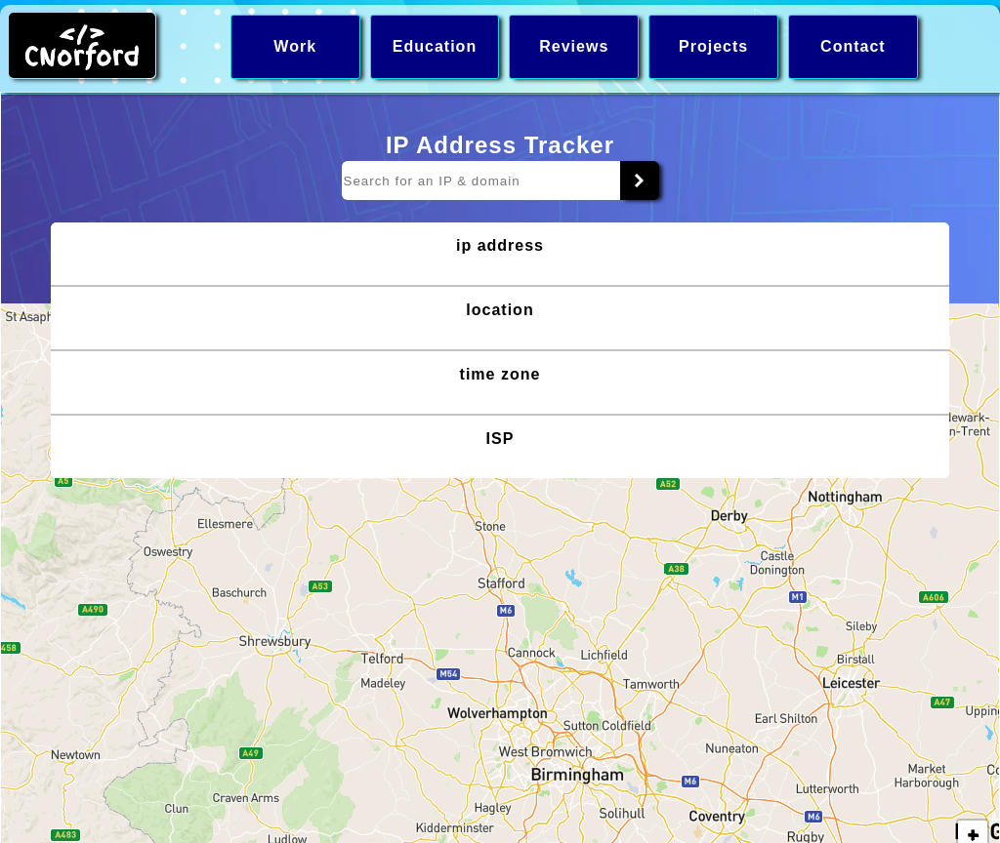
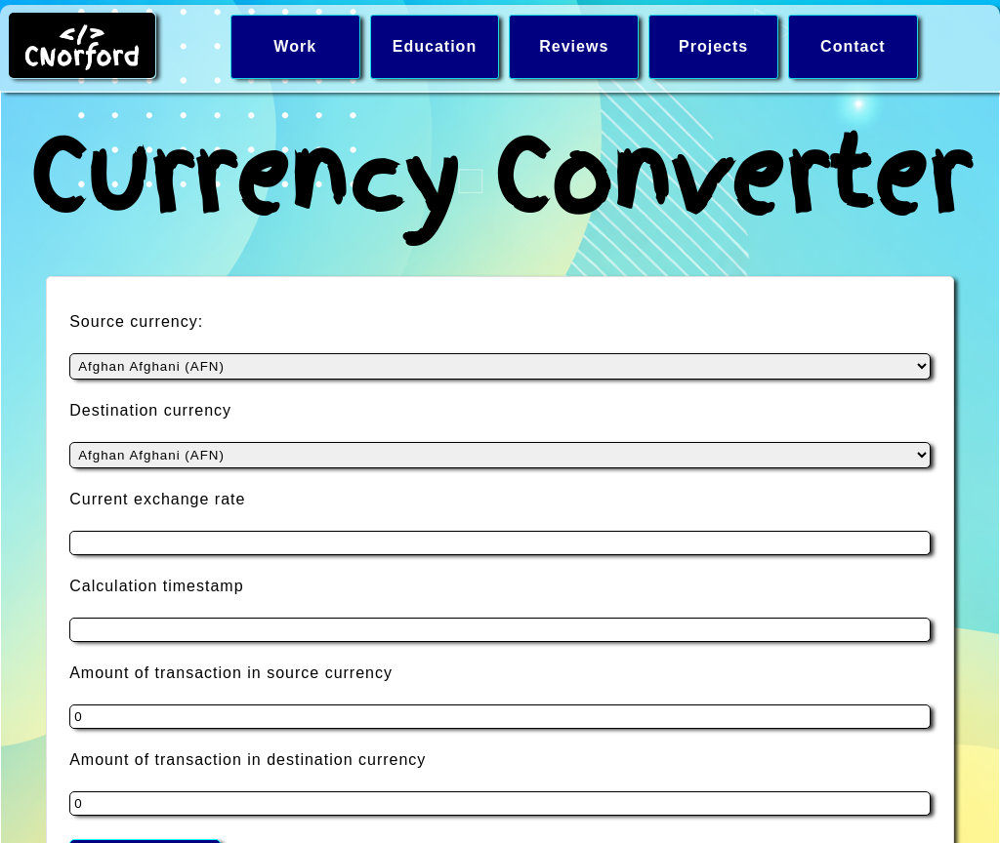
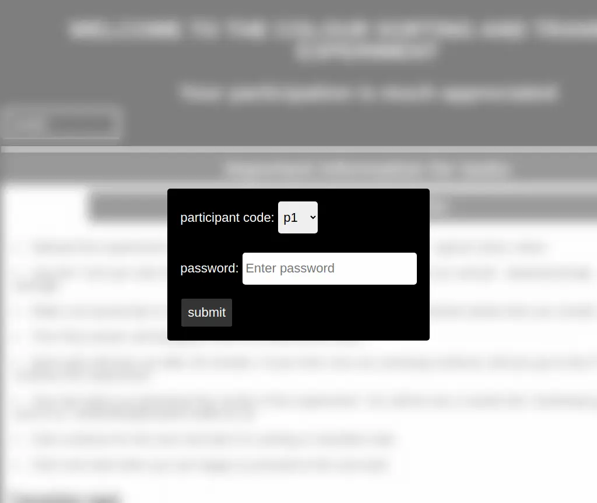
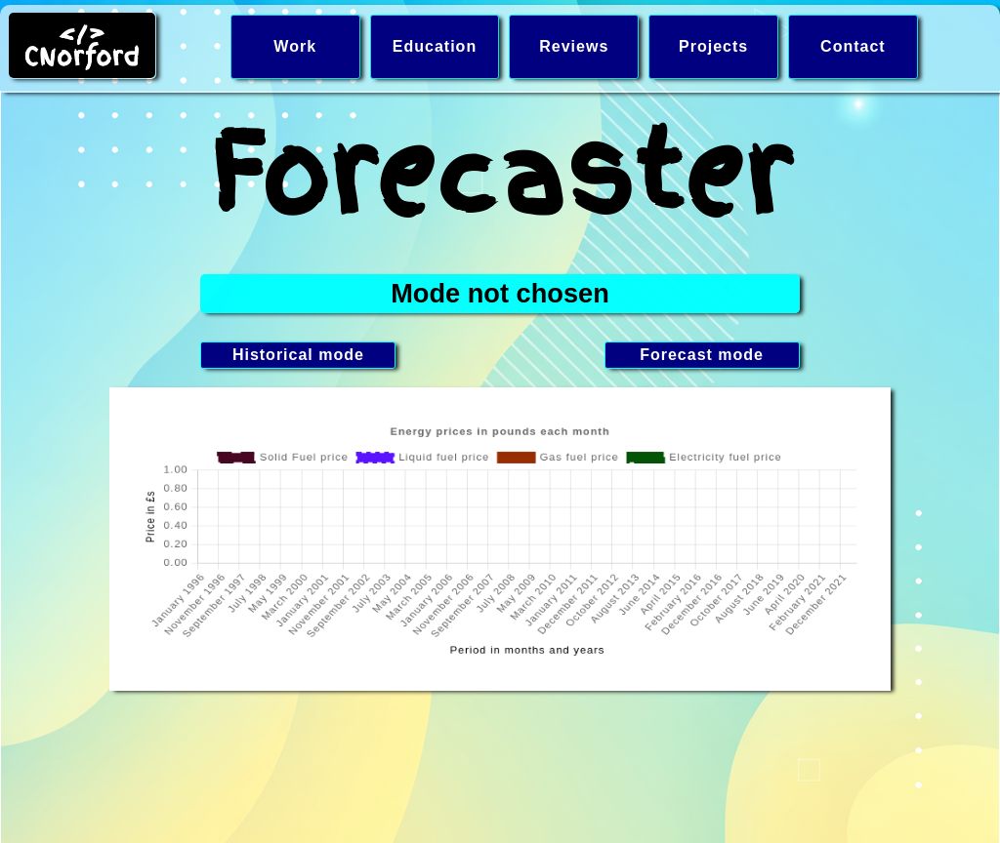

Projects
Robot Job Board

Tech: HTML CSS JavaScript JSX React
A job board that is visually similar to a Kanban board. Users can create, read, update, and delete job entries. Each job has an id , name, notes and status. Individuals can save jobs on a specific browser and device. For example, the jobs saved on a chrome device on a mobile cannot be accessed on a firefox browser on the same device or a chrome on a different device. The same is localised and specific.
- Fill in the fields of the job form, including id, name, notes and status.
- When the data is correctly added, press "Add/Update" job button to add a job to the kanban board.
- To save a job permanently to the job list, press "Save Job List".
- To edit a job, click the "Edit Job" button to edit a job , fill in the fields specified in step 1 then do steps 2 and 3 to update, using "Update Job".
- To remove a job, click the "Remove Job" button then do step 3 to save the changes.
- Optional - press "show/hide List" button to show or hide a column.
- Optional - press buttons in the Job Name Input fieldset to enter names of jobs quickly.
IP Address Tracker
Tech: HTML CSS JavaScript
This project allows a user to view the website or IP address registration data and locate the registration location on the map. An API is used to map a URL address or an IP address to a internet service provider - plus their location and time zone.
- The app will ask to retrieve the user's IP address if no characters or empty characters are submitted
- If the user presses cancel, the alert closes and nothing is retrieved
- If the user clicks ok, then the IP address information is retrieved
- Users can also type in an IP or a worded website home address into the app for its details
Currency Converter
Tech: HTML CSS JavaScript
This project allows a user to convert a currency - from one country - to another currency of another country. This uses live data from an API to fetch the conversion rates (1 unit of source currency converted to destination currency).
- Pick a country source currency from the drop down
- Pick a destination country's currency
- Add how much they want to convert
- Submit
Once submitted, the app shows the timestamp, 1 unit of the source compared to the destination unit(s), and the total source currency input converted to destination currency.
Colour Game
Tech: HTML CSS JavaScript jQuery
View on a laptop that supports a resolution width of 1380 pixels. Required for a fair experiment. The project investigates whether colour sorting and mixing symbols are effective for colour recognition and colour gradients tasks. In the case of gradients, if someone is cooking meat, recognising the colour changes from pink to brown indicates to someone with colour vision deficiency (CVD) that their food is cooked correctly.
- The passwords for all participants is passcode + the number in the participant code. For example p1 has a password passcode1.
- Participants 1 - 6 are for color vision deficient (CVD) individuals or simulated CVD.
- Participants 7 - 12 are for normal colour vision individuals.
- Click the thumbnail to view project and follow the page instructions.
Forecaster
Tech: HTML CSS JavaScript
This project allows a user to view historical and projected fuel prices.
- Pick a mode - historical or forecaster
- Historical - use buttons below to view data
- Forecaster - projection of 12 months of future fuel prices are shown
CoiledKind

Tech: HTML CSS JavaScript (in progress)
This project is a front-end blog website focused on Black hair care and beauty topics, aiming to inspire developers and stakeholders by showcasing key front-end concepts such as API consumption, CRUD operations, and dynamic content rendering using a JSON Server mock API.
Users can create, read, update, and delete blog posts, demonstrating client-side data management and seamless communication via a REST-style API without a custom backend.
Currently, the Home, About, and LCO Method pages are partially developed to demonstrate layout structure, routing, and content population driven by API. This project is still under development, with plans to enhance styling, content completeness, and the overall user experience.
Education
MSc in Software Engineering
- Further development: online learning
- Dates: 2025
- Location: Online
| skills | |
|---|---|
| Name | Description |
| Python | Will learn the most popular language for AI and ML development. |
| React | Learnt how to create interactive, component-based web pages. |
| Figma | Can create high and low fidelity/detail wireframes for websites |
| PhotoShop | Can edit graphics using assets/graphics so they present to a high standard |
| Logo Creation | Can use graphical software, typography and external assests to create responsive, simple and informative logos about a companies brand. |
- University: Staffordshire
- Dates: 2021-2024
- Location: Online
- Grade: Distinction
| MSc (Front-end skills) | |
|---|---|
| Name | Description |
| HTML | Well structured web pages that are semantic, accessible and validated. |
| CSS | Beautifully styled webpages that can replicate the latest web design trends. |
| JavaScript | Interactive web pages, with communication with external APIs. |
| jQuery | Can use an industry standard JavaScript library for interactive UI. |
| MSc (Back-end skills) | |
|---|---|
| Name | Description |
| PHP | Processing information and displaying web pages from user requests. |
| Laravel | Confident using an industry standard PHP Framework for secure processing of users information. |
| Back-end JavaScript | Confident using JavaScript to create APIs when coupled with Node.js. |
| Spring Boot | Confident using an industry standard Java Framework for creating APIs. |
| SQL | Ability to store and search for information within a database; also, have used industry relational databases like MySQL. |
Reviews
Charlotte joined us in January 2021 on a Part Time Distance Learning MSc. Every indication is that she will graduate on schedule and with a target classification of at least a Merit. Charlotte has been a wholly committed and professional student who has shown a strong aptitude in both technical and social skills. As their Course Leader and Module Tutor it has been my pleasure to work with them and watch their growing confidence and subject matter expertise. I would have no hesitation in endorsing their application for any suitable role.
K.C.Hilton. Course Leader MSc Computer Science (Software Engineering), Staffordshire University
Work
Role: Web Designer/Developer
- Location: Birmingham/Online
- Employer: Private Employer
- Dates: 2025 – Present
- Volunteer position
- Designing, developing, and maintaining a website for Wake Up GB, an organisation promoting transparency and accountability in British politics
- Technical stack includes - HTML, CSS, JavaScript, and Tailwind CSS, with a planned transition to PHP and WordPress to support content editing and long-term maintenance by volunteers
- Working directly with the main stakeholder to gather requirements and define website structure, features, and content
- Creating low- and high-fidelity wireframes and user flow diagrams using Figma
- Editing and creating responsive assets in Adobe Photoshop and Illustrator
- Managing version control and deployment using GitHub and GitHub Desktop
- Integrating email subscription forms and APIs to support mailing the organisation's mailing list functionality.
- Applying black-box and white-box testing to ensure the code meets the organisation's specifications
- Conducting acceptance testing with stakeholders to validate features and usability
- Performing cross-browser testing across major desktop and mobile browsers
- Implementing search engine optimisation best practices
- Supporting ongoing maintenance, content updates, and feature enhancements